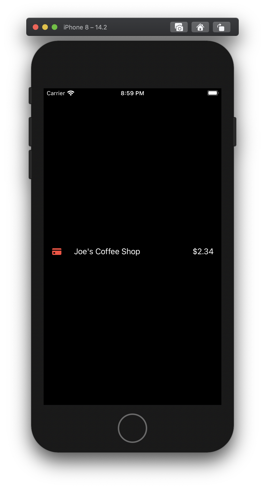
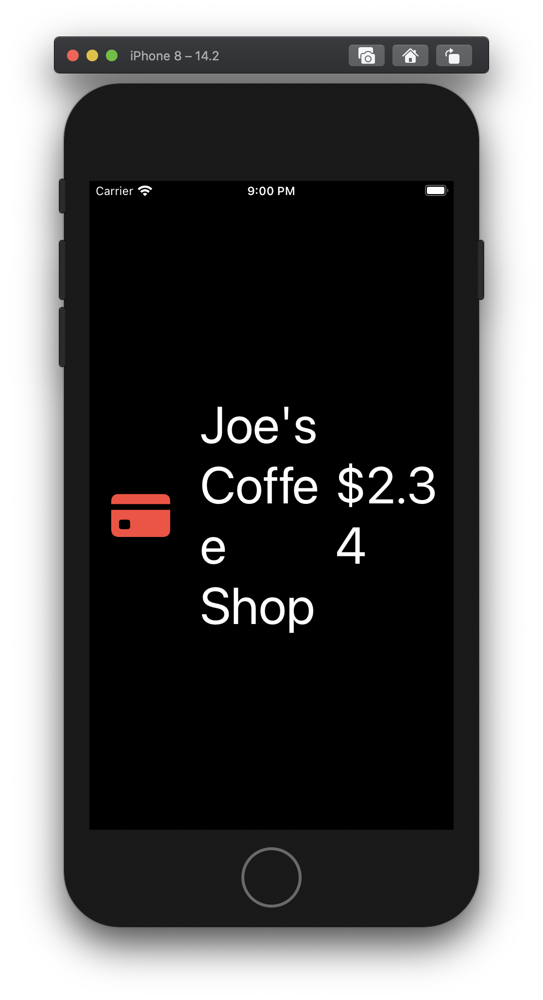
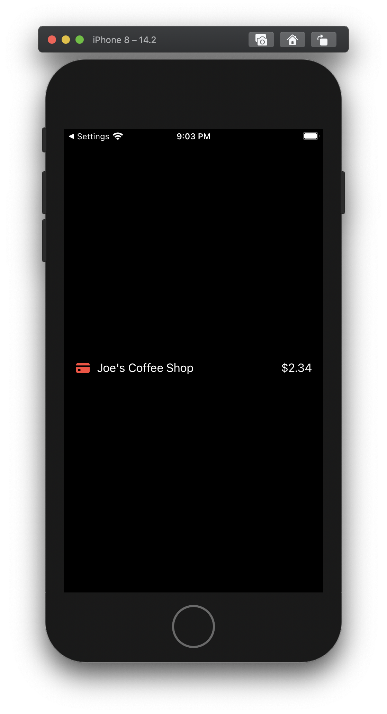
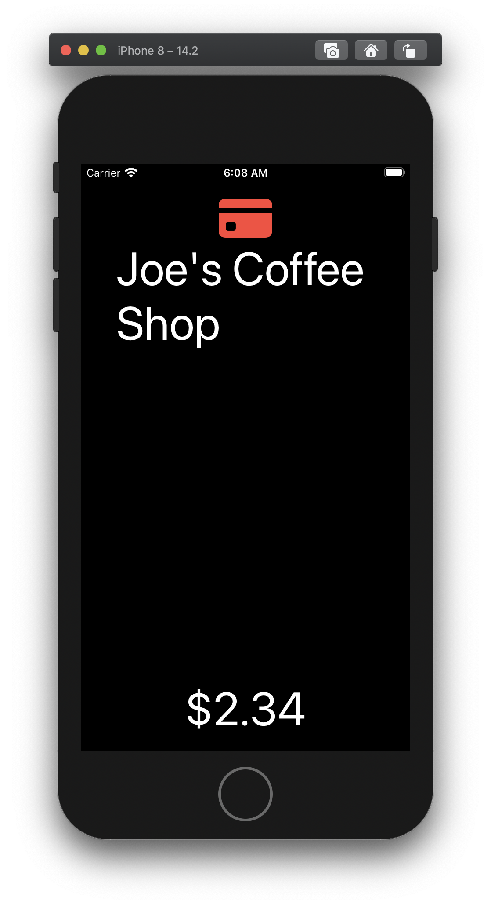
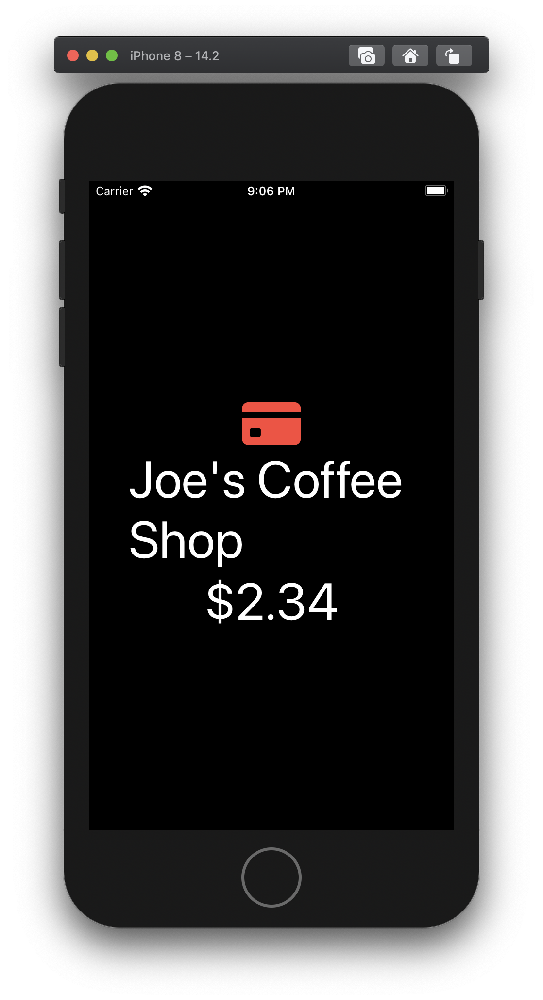

Responsive View Components
I used to write my iOS views to be pixel perfect, until I discovered UIKit's Preferred Font method and how it worked. After that, I struggled to implement views that were useful at scale, or even beautiful, on smaller screens like that of the iPhone 8. Eventually I designed a UIKit component that accounted for accessible font sizes. In this article we'll remake that component in SwiftUI.
The Problem
We have a layout that works perfectly in a SwiftUI HStack. This view contains one Image and two Text views. Looks great right?
Well...
Let's look at it after bumping our preferred font size.

Nope!
That looks like garbage. We need to respond to the font size increase, and change the layout of this component.
Good news is, the SwiftUI team has given us easy access to the user's preferred font size.
Responsive Stack View
For this tutorial, we'll focus on a simple view that responds to accessible font sizes. To do that we'll use the ContentSizeCategory Environment variable in SwiftUI.
On it, there is a computed property, isAccessibilityCategory, that returns what we're looking for. If the user has selected to use large fonts and has scaled their font up into the larger fonts category, isAccessibilityCategory returns true.
We can add use it like this:
public struct SomeView : AccessibleView {
@Environment(\.sizeCategory) public var size: ContentSizeCategory
public var body: some View {
if size.isAccessibilityCategory {
Text("isAccessibilityCategory == true")
} else {
Text("isAccessibilityCategory == false")
}
}
}
That's great! But how do I pass in the content I want?
To make our own stack view we'll need to be able to pass in a bunch of subviews. We can do this with a ViewBuilder.
A ViewBuilder is a property wrapper that allows us to pass one or more views into our stack view as a function.
Alright! Let's put the Responsive Stack View together using the ContentSizeCategory and a ViewBuilder!
struct RStack<Content: View> : View {
@Environment(\.sizeCategory) var size: ContentSizeCategory
let content: () -> Content
init(@ViewBuilder content: @escaping () -> Content) {
self.content = content
}
var body: some View {
if size.isAccessibilityCategory {
VStack { content() }
} else {
HStack { content() }
}
}
}
Let's see what it looks like!

Notice how the RStack has the same syntax of the HStack and VStack? That's the ViewBuilder doing it's magic.
struct ContentView: View {
var body: some View {
RStack {
Image(systemName: "creditcard.fill")
.foregroundColor(.red)
.padding(.trailing)
Text("Joe's Coffee Shop")
Spacer()
Text("$2.34")
}.padding()
}
}

Much Better!
We're getting closer! Although, that spacer is a bit of a problem...
Let's make another component to handle that little detail. After all, practice makes permanent.
For this component, we want to make sure we add a spacer for a horizontal layout, but not a vertical layout. We won't need to use a ViewBuilder because we are only going to be working with 2 Text views.
Let's do it!
Practice makes permanent
struct RDualText: View {
@Environment(\.sizeCategory) var size: ContentSizeCategory
var firstText: Text
var secondText: Text
var spacer = Spacer()
init(firstText: Text, secondText: Text) {
self.firstText = firstText
self.secondText = secondText
}
var body: some View {
RStack {
self.firstText
if !size.isAccessibilityCategory {
spacer
}
self.secondText
}
}
}
Putting it all together
Alright, let's go back to our content view, and use our new component.
struct ContentView: View {
var body: some View {
RStack {
Image(systemName: "creditcard.fill")
.foregroundColor(.red)
RDualText(
firstText: Text("Joe's Coffee Shop"),
secondText: Text("$2.34")
)
}.padding()
}
}
Accessible apps don't have to be ugly.
Making a component that accounts for a user's accessibility settings was far more difficult in the world of UIKit. But we've only scratched the surface, there is a lot more to handling accessibility well than what we covered here.